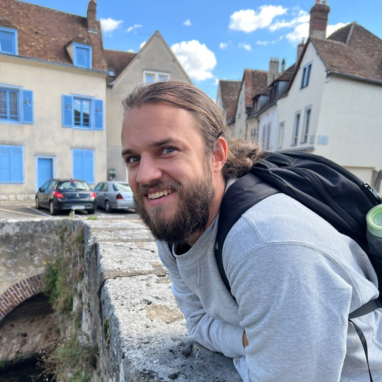

David Dale
Qui je suis
- Je suis un informaticien de 30 ans, spécialisé dans le traitement des langues naturelles.
- Je viens de Russie, mais j'habite maintenant à Paris.
- J'ai un travail à temps plein et je ne veux pas le changer. Mais je peux être ouvert aux projets parallèles, s'ils sont intéressants et éthiques.
- Je m'oppose à l'agression militaire russe et je soutiens l'indépendance et l'intégrité territoriale de l'Ukraine.
- Je soutiens financièrement les mouvements anti-guerre et de libération en Russie et je suis prêt à faire du bénévolat pour eux.

Ce que je fais
- Je travaille au FAIR (Facebook AI Research) sur le projet de traduction automatique No Language Left Behind.
- Je crée des outils pour le traitement automatique du langage naturel (TALN).
- J'enseigne les mathématiques appliquées et l'analyse de données.
Ce que j'ai fait avant
- J'ai travaillé au laboratoire de TALN à l'université Skoltech en tant qu'ingénieur de recherche.
- J'ai participé au développement de l'assistant vocal Alice de Yandex.
- J'ai travaillé comme analyste dans Yandex Data Factory.
- J'ai aidé à gérer les risques de crédit aux particuliers dans Alfa Bank.
Matériaux
- Github
- Articles de blog sur Habr (ru) et sur Medium (en)
- Google Scholar
- Quelques de mes modèles TALN sur Huggingface
- Mon CV
- Chaînes et chats dans Telegram
- nlp_jobs - une chaîne avec offres d'emploi et CVs dans le domaine de la TALN
- "Изолента Мёбиуса" - une chaîne sur la programmation et la TALN (en russe)
- "Матчасть" - une chaîne sur les maths très appliquées (en russe)
- Mon profil LiveJournal obsolète (en russe)
- Enregistrements Youtube:
- Mon expérience dans la construction d'un assistant vocal multi-compétences (en anglais)
- À propos de la reconnaissance d'entité nommée dans Alice (en russe)
- Bases de feature engineering (en russe)
- Матчасть 2016: 30 heures de cours d'introduction aux mathématiques appliquées et à l'analyse de données (en russe)
Contacts
- Tg
- VK
- FB
- E-mail: dale.david@mail.ru